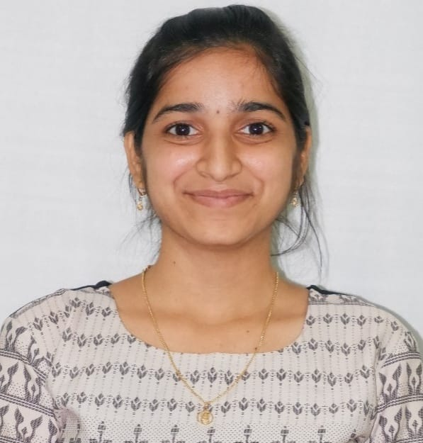

About Me
Hello! I'm Konkala Shravani, a passionate full-stack developer with a strong foundation in Java, web technologies, and databases. I enjoy building efficient and scalable applications that solve real-world problems.
I am constantly learning and exploring new technologies to stay updated in this ever-evolving field. When I’m not coding, I love to explore nature.
Feel free to explore the rest of my portfolio to learn more about my skills, projects, and experiences!
Quick Facts
- Location: Hyderabad, India
- Languages: English, Hindi, Telugu
- Hobbies: Gardening, Listening to Music, Exploring Tech Trends
- Strengths: Self-motivated, Eagerness to Learn, Time Management, Teamwork, Positive Attitude
I am a quick learner with a strong foundation in programming languages such as Java. During my academic tenure, I worked on several projects that involved building web applications and database management systems, which helped me develop strong technical and problem-solving skills.